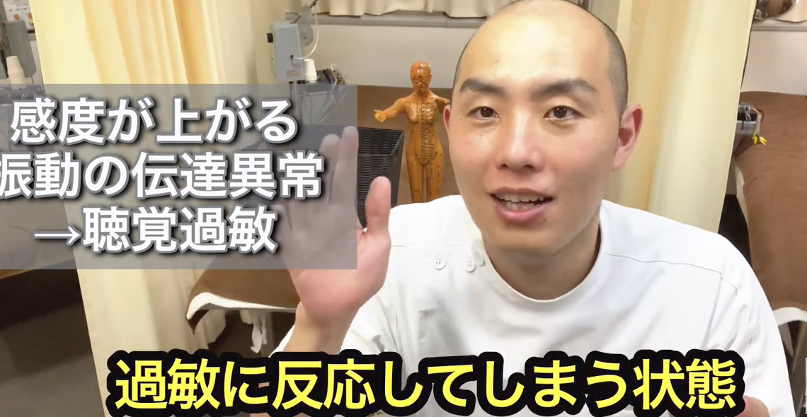
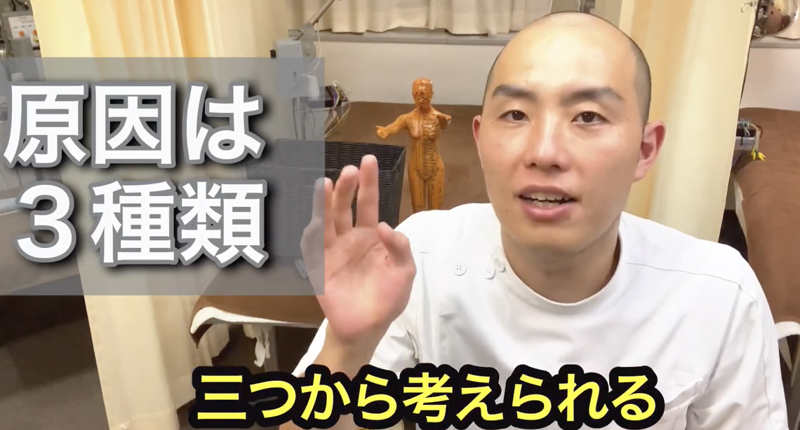
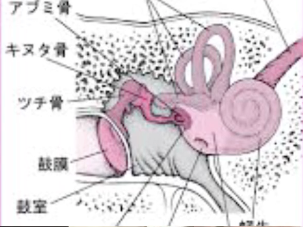
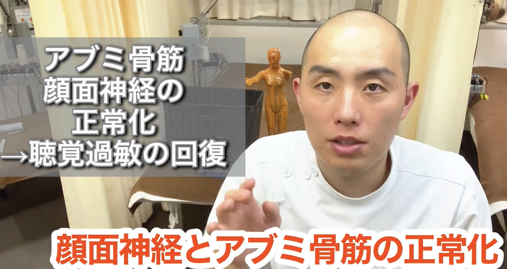
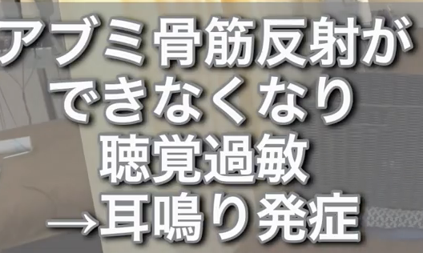
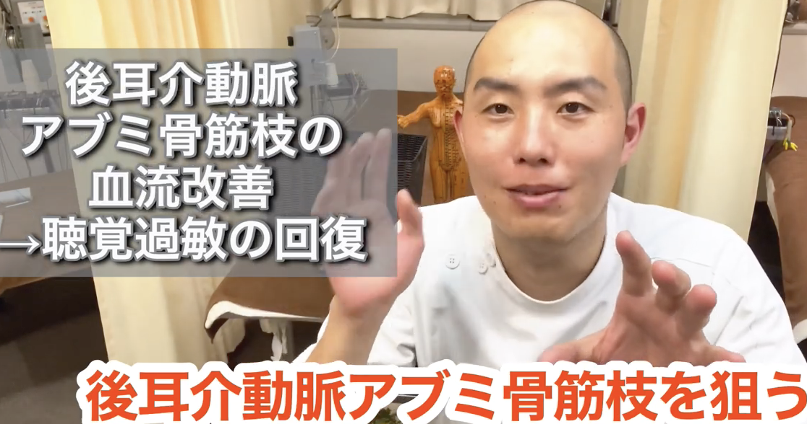

聴覚過敏の鍼灸
日常の音が大きく響いたり不快に感じたりする聴覚過敏に対し、耳周囲の血流と自律神経を整える鍼灸でケアします。
まず知っておきたい要点と改善の流れ
聴覚過敏は、一般的には問題ないとされる音の大きさや種類に対して過度に反応し、不快感や痛みを伴う状態です。耳の機能、脳の情報処理機能、ストレスの3つが関係していると考えられています。音の振動を内耳へ伝える耳小骨やアブミ骨筋の働き、内耳の障害が関わるほか、不眠や過剰なストレスによって耳の裏側が硬く詰まったようになり症状が悪化しやすい点も特徴です。まずは耳鼻咽喉科で耳の異常がないか確認することが大切です。（公式解説）
このようなお悩みはありませんか？
- ✓スーパーの冷蔵庫の低い音や生活音が耳に響いて辛い
- ✓周囲の人が気にならない音でも強い不快感や痛みを感じる
- ✓ざわざわした場所や人混みに行くと強い疲労や不安が出る
- ✓音のストレスや不眠が重なり日常生活に支障が出ている
当院の施術アプローチ・改善の流れ
なぜ鍼灸で改善へ向かうのか？（作用機序の図解）
聴覚過敏に対する鍼灸は、耳周囲・頸部の微小循環改善と聴覚・粘膜調整機序を通じて、お体本来の回復力を引き出します。

翳風・風池・合谷など、耳鼻咽喉領域の神経・血管と連動する経穴へ繊細にアプローチします。
首・顎まわりの深層筋緊張を緩め、内耳や粘膜周囲の滞った血流とリンパ循環を促します。
ストレスや睡眠不足で高ぶった交感神経を鎮め、音への過敏反応や粘膜の過剰反応を和らげます。
標準治療を妨げない設計で、生活支障度（THI等）の軽減と再発しにくい体調づくりを支えます。
院長YouTube解説・関連動画
聴覚過敏は、特定の音に対してとても敏感に反応してしまう

聴覚過敏は一般的には問題ないとされる音の大きさや種類に対して過敏に反応してしまう状態のことです。一般的な音が耐えられないほど不快に感じたり特定の音が非常に不快に感じたりすることがあります。通常の聴覚とは異なり、不快感や痛みを伴う場合があります。
ほとんどの人は突然大きな音が聞こえたりしたとき、一瞬注意は払いますが深く気に留めることはありませんが、感覚過敏のある人はそれができません。多くの人が無視できるような状況や刺激を無視できず過敏に反応してしまうのです。
聴覚は、同じ音であっても人それぞれ異なる感じ方をしています。聴覚過敏では、他の人が気にしないような特定の音、大きな音などに対して、過敏に反応したり不安を感じたりするのです。
耳の機能、脳の機能、ストレスなどの3つが関係している

聴覚過敏症の原因は、はっきりとは分かっていませんが、脳の中で音を感じる部分が敏感になってしまうことが1つの原因であると考えられています。耳や神経への物理的なダメージによって敏感になる場合とストレスや精神疾患に敏感になる場合があります。
また、聴覚過敏の発症にはメニエール病や顔面神経麻痺などの病気が関わっていることもあります。
聴覚過敏の原因は、脳の機能、耳の機能、ストレスの3つから考えられます。
・脳の機能
発達障害やてんかん、片頭痛などがある場合に発生が見られやすいです。特に自閉スペクトラム症、注意欠如多動症A D H Dなど発達障害がある人は聴覚過敏を持ちやすいと言われています。この場合の原因は特定されていません。
てんかん、片頭痛は脳の神経細胞が過敏になってしまい、必要の音の聞き分けが難しくなることで起こります。脳過敏症候群は片頭痛の慢性化によって起きるとと言われています。片頭痛後脳過敏症という症状があるくらい脳過敏症はポピュラーな症状です。
・耳の機能
耳の機能では、耳小骨筋の反射異常と内耳の反応異常が関係しています。
耳小骨筋の反射異常は、大きな音が耳に入ると耳の中にある筋肉が収縮し、音の大きさを調節していますが、このシステムが働かない場合に聴覚過敏が起こります。耳小骨筋は顔面神経に支配されているため、顔面神経麻痺が起きた際に起こります。
内耳の反応異常は、低下した聴力をカバーするために音を脳に伝える内耳の細胞の働きに異常が起きてしまい聴覚過敏が起こります。
・ストレス
ストレスや不安は聴覚に限らず多くの感覚過敏状態と関連すると言われています。体調が悪い時に不安でドキドキしている場合などは特に注意が必要です。無調整耳鳴りといい、聴力に問題はないにも関わらず耳鳴りが起きることがあります。ストレスや自律神経が原因で血行が悪くなるとこのような状態が現れることがあるのです。

聴覚に歪みを感じる場合は内耳の鍋牛の障害が疑われます。聴覚過敏は適切な聴覚刺激に対して過度に反応する状態を示しています。この状態には耳小骨が関連しています。
耳小骨は人間の耳に存在する3つの小さな骨で、それぞれツチ骨、キヌタ骨、アブミ骨と言われています。
耳小骨は中耳に位置し、一連のレバーとして働いて音波を外耳から内耳に伝えています。具体的にはツチ骨が鼓膜からの振動を受け取ってそれをキヌタ骨に伝え、キヌタ骨がその振動をアブミ骨に伝え、アブミ骨がその振動を内耳の液体に伝達します。
耳小骨は音波を効率よく内耳に伝達する役割を果たしており、聴覚を可能にしているのです。そのため、これらの骨が傷ついたり機能を失ったりすると難聴や聴覚過敏の原因になることがあります。
🎥 他のYouTube切り抜き・解説を読む（あと2件）▼
アブミ骨筋性耳鳴り
聴覚過敏を理解する上で重要なのがアブミ骨筋性耳鳴りです。アブミ骨筋性耳鳴りは顔面神経麻痺の後遺症として発生する特殊なタイプの耳鳴りで、神経が再生する時に顔面の表情筋とアブミ骨筋の神経繊維が間違った経路（過誤支配）を形成することで生じます。
顔面神経麻痺があった後に神経が再生する中で顔を動かす神経と耳の中を調整する神経が間違って再生してしまうことで恐ろしい結果を生んでしまうのです。この事象が発生してしまうと顔の表情筋を動かす神経信号がアブミ骨に伝達されます。
アブミ骨筋が過剰に動いて運動の振動が内耳に伝わり、その結果耳鳴りとして感じます。この耳鳴りは顔を動かしたり目を閉じたりすると生じるとことがあります。当院でも噛むと響いたり首を振ると響いたり顔の動きで耳鳴りが発生したりする現象は非常に多くみられます。
アブミ骨筋性耳鳴りは顔面神経麻痺から派生して起こる症状ですが、聴覚過敏と関連しています。アブミ骨筋は耳の奥にあり、ちゃんと機能しないと音の調整ができなくて聴覚過敏になってしまうのです。
鍼灸で聴覚過敏が改善することは実際あります。当院では、聴覚過敏はアブミ骨筋の機能が正常に戻ることで回復できると考えています。

聴覚過敏を鍼灸で改善するときには、顔面神経とアブミ骨筋の正常化を狙います。顔面神経の通り道が影響を受けることでアブミ骨筋の働きが鈍くなり、鼓膜の振動を内耳に伝えやすくなってしまい聴覚過敏を起こすという想定のもと施術を行います。
鍼で顔面神経の正常化と顔面神経の通り道を促すことでアブミ骨筋の機能を正常化させます。アブミ骨筋神経というものがあります。この神経は、顔面神経がアブミ骨筋に到達する前に分岐している神経です。
アブミ骨筋神経を狙ってアブミ骨筋の誤った収縮を減少させるように鍼で狙っていきます。アブミ骨筋に影響を与える際、後耳介動脈アブミ骨筋枝を狙うことがあります。耳に影響を送る後耳介動脈を狙うことで血流を改善するのです。血流の改善は神経機能の正常化し、筋肉の緊張を和らげることができます。
鼓膜の振動は耳小骨筋を経由して内耳に伝わりますが、ダイレクトに強い音を聞いて内耳に伝わってしまうと音が大きすぎてパニックを起こしてしまいます。そのため、アブミ骨筋がクッションの役割を果たして大きい音を制御しています。
アブミ骨筋が正常に働けば聴覚過敏は改善することがあるのです。
聴覚過敏は、聴覚がとても過敏になること

聴覚過敏は、聴覚がとても過敏になります。多くの人が聞こえないような音が聞こえたり、多くの人にとってストレスにならない音に対して苦痛を感じたりします。当院に聴覚過敏で来院される方で1番多いのは、1番多いのはスーパーの冷蔵庫の低い音が耳に響いて辛いという人です。
他の人に比べて音量が大きく感じたり、音が聞こえることに痛みを感じたりすることもあります。
周りの雑音が耳に入ることで特定の音に注意を向けることが難しくなる人もいます。ストレスを感じたりイライラしたりすることもあります。
しかし、聴覚過敏があってもすべての音に対して苦痛を示すわけではありません。自分が許容できる音があったり特定の好きな音があったり嫌いな音がったりします。聴覚過敏で音に対してどのような反応を示すのかは人によって違うのです。
日常生活でよく見られる例としては、特定の音に対して苦痛を感じる、何気ない音を異常に嫌がる、遠くの音に対して早く反応する、ざわざわしている場所が苦手などです。
聴覚過敏を悪化させる要因の1つに不眠がある

聴覚過敏の改善方法は、耳栓やイヤーマフを使って音を遮ったり、補聴器やサウンドジェネレーターを使って音量の認識を改善したりする方法があります。
聴覚過敏を悪化させる要因の1つに不眠があるため、睡眠障害がある場合は積極的に改善を行うことも必要です。不安やうつが強い場合には、向精神薬を使うこともあります。
不適切な思考や行動に気づき、それを修正できるように支援する方法を行うこともあります。
30代女性Tさんのケース
悩み：脳過敏と聴覚過敏、耳鳴りも継続中、肩こりもあり
前回は２週間前に受けてそこから比べると若干脳過敏や聴覚過敏は落ち着いた感じはありますが、日によって音が響いたりしている状態です。頭痛はまだ平行線上で毎日あります。聴覚過敏の症状は度合いは日によって違いますが、左右で同じで、耳鳴りもチリチリとした音がします。最大の辛さを10とすると現在は２〜6くらいです。
体を確認したところ、前回は首を中心に施術を行いましたが少し残っている感じがありました。刺激すると逆に強くなることもあるため、施術の間隔を空けることも検討中です。Tさんの状態は耳鳴りの変動期がずっと続いている状態です。
薬について：抗てんかん薬は1日に2回飲んでいます。1回に減らすと頭痛が起きてしまったり脳過敏が激しくなったりするため、薬を早く辞めたい気持ちはありますが急に辞めると悪化することで悩んでいます。
理想は頭痛薬も抗てんかん薬も卒業したいとのことでそこを目指して施術を行います。症状がおさまれば薬を飲まなくて良くなるため症状が改善するまでが勝負どころです。当院では首がもう少し安定するともっと楽になると見込んでいます。薬は減らしたり無くしたりした後から徐々に実感できるものであるためもう一声であると考えています。
経過：Tさんはいつ改善するかわからないという不安がすごくあるそうですが、基本的にずっと辛い状態が続き、その後響き方がゆるくなったり左右差が出たりして良くなっていく経過を辿るため、経過としては順調です。Tさんも前は何をしていても気になっていた耳鳴りが楽しいことをしている時や集中しているときは気にならなくなったそうです。
改善までの期間の長さに驚いたそうですが、1ヶ月くらいで改善する人もいます。すぐ改善する人には2つのタイプがあります。
①単純に脳過敏単体の問題の方
頭痛がひどくて病院に行っても改善しない悩みの人は比較的にすぐ改善します。耳鳴りがする人もいるが少しやればすぐ良くなります。
②脳過敏症候群という情報を知って自分が脳過敏症候群だと勘違いしている方
気持ちがナイーブなため喋っている声が響いたり耳鳴りがすることもありますがすぐに良くなります。そのような人は施術で良くなるというより一生懸命話してくれるため話を聞くことで良くなります。その人が弱いのではなく特定の不安障害で、その部分が解消されて落ち着くのです。
前回の施術後：ぐっすり眠れました。好転反応なのかその日と次の日は頭痛がします。2日目から肩こりや首こりが落ち着いて楽になっている実感があります。
鍼灸は翌日や翌々日の方が効果を感じます。筋肉と脳には反応の違いに大きな差があって、筋肉は刺激すると直後効果が高くすぐ楽になりますが、脳の場合は刺激された後症状が重くなります。Tさんの聴覚過敏も毎回帰る時に大きくなるそうですが、翌日や翌々日には落ち着くとのことです。
施術内容：通常5cmの鍼を使って2cm入れますが、今回は首の付け根に5cm入れる鍼を行いました。
さらに、肩甲骨の可動域が狭く外によっていて痛みの原因になっているため、肩甲骨をもう少し内下に持って行きたいです。
腕からではなく自分の背筋の力で持っていってほしいと思います。肩甲骨を寄せる意識だけ普段の生活の中から意識してほしいというアドバイスを行いました。
耳鼻咽喉のお悩みのツボ図解とセルフケア
実際の施術ではお一人おひとりの体質・症状に合わせて選穴しますが、耳鼻咽喉領域（アレルギー性鼻炎・耳鳴り・突発性難聴併用・顎関節症）の臨床でよく用いられる代表的なツボの目安です。

📌 代表的なツボの詳細一覧表を開く（6穴） ▼
| ツボ名 | 位置の目安 | 主な狙い | セルフケアの注意点 |
|---|---|---|---|
| 聴宮（ちょうきゅう） | 耳の穴の前（耳珠）のすぐ前、開口時のくぼみ | 耳鳴り・耳閉感・顎関節周囲の血流改善 | 口を軽く開けてごく優しく（顎痛時は無理に開けない） |
| 翳風（えいふう） | 耳たぶの後ろ、乳様突起と下顎骨の間のくぼみ | 耳鳴り・めまい・難聴ケア・耳周囲循環改善 | 顔面神経近接のため強圧を避け温め・軽圧で |
| 迎香（げいこう） | 小鼻の左右の膨らみのすぐ脇（ほうれい線上） | 鼻づまり・アレルギー性鼻炎の鼻腔通気改善 | 皮膚が薄いためこすらず指先で軽く押す |
| 印堂（いんどう） | 左右の眉頭のちょうど中央 | 鼻づまり・副鼻腔の重だるさ・自律神経鎮静 | 指の腹でゆっくり5秒圧迫または優しくさする |
| 下関（げかん） | 耳の前、頬骨のアーチの下縁のくぼみ | 顎関節症・咬筋の過緊張・耳周囲の放散痛緩和 | 圧痛が出やすいため痛気持ちいい手前の弱圧で |
| 完骨（かんこつ） | 耳後ろの硬い骨（乳様突起）の後下方のくぼみ | めまい・耳鳴り・胸鎖乳突筋〜後頭部の緊張緩和 | めまい発作時は頭を動かさず座位で軽く押さえる |
国際査読論文の科学的エビデンス
国際的な医学データベース（PubMed・Cochrane等）で報告されている耳鼻咽喉領域（アレルギー性鼻炎・耳鳴り・突発性難聴併用・顎関節症）領域の代表的な査読済み鍼灸研究をまとめています（標準治療との併用や研究上の限界を含めて正確に掲載）。
📚 査読論文データ・PubMed出典リンクを開く（4件） ▼
| 年・研究デザイン | 対象・規模 | 主な結果 | 限界・出典 |
|---|---|---|---|
| 2013年 大規模多施設RCT | 季節性アレルギー性鼻炎 422名（ドイツ） | 7〜8週のRQLQ QOLがシャム比0.5点・薬単独比0.7点改善（P<0.001）、頓用薬使用も有意減少（P<0.001）。 | 1年目16週では群間差消失、臨床的意義は慎重評価。 Ann Intern Med (PMID: 23420231) |
| 2021年 メタ解析 | 耳鳴り 8 RCTs（n=504） | 生活支障度THI（MD -10.11, p<0.001）・TSI（MD -8.36, p<0.001）が有意改善。VASは有意差なし（p=0.06）。 | 組入れRCTの質・サンプル規模に限界あり。 Acupunct Med (PMID: 32772848) |
| 2026年 ネットワークメタ解析 | 突発性難聴 36研究（n=3,360・標準治療併用） | ステロイド等の標準治療への鍼灸併用で総有効率RR 1.19（p<0.0001）、3週間コースが推奨。 | エビデンス確実性は低く標準治療（早期ステロイド）併用が前提。 Complement Ther Med (PMID: 42918509) |
| 2023年 メタ解析 | 成人顎関節症 22 RCTs統合（n=471） | 標準治療併用で有効率RR 1.36・疼痛VAS MD -1.23と有意改善。 | GRADE確実性は低〜非常に低、さらなる高品質RCTが必要。 Medicine (PMID: 37746950) |
参考文献・出典
- 銀座そうぜん鍼灸院「聴覚過敏の公式解説ページ」
- 2013年 大規模多施設RCT（季節性アレルギー性鼻炎 422名（ドイツ））— Ann Intern Med (PMID: 23420231)
- 2021年 メタ解析（耳鳴り 8 RCTs（n=504））— Acupunct Med (PMID: 32772848)
- 2026年 ネットワークメタ解析（突発性難聴 36研究（n=3,360・標準治療併用））— Complement Ther Med (PMID: 42918509)
- 2023年 メタ解析（成人顎関節症 22 RCTs統合（n=471））— Medicine (PMID: 37746950)
よくある質問（FAQ）
Q. 耳栓やイヤーマフを使いながら通院しても大丈夫ですか？▼
Q. セルフケアで強くマッサージしてもよいですか？▼
あわせて読まれる関連疾患（耳鼻咽喉のお悩み）
ある日突然片耳などが聞こえにくくなる感音難聴です。発症早期の耳鼻科ステロイド治療を最優先に、早期併用や回復期の耳鳴り・めまいをケアします。
実際には音がないのに耳の中で雑音が聞こえる状態です。耳の血流や自律神経・脳の過敏さを整えるケアで軽減を目指します。
普段は気にならない匂いにも強く反応して頭痛や吐き気を招く嗅覚過敏に対し、自律神経と血流を整える鍼灸でサポートします。
大音量の曝露で内耳が傷つく音響外傷。急性期は早期の耳鼻咽喉科受診と安静を最優先に、耳の血流を促す補完的ケアを行います。
外耳道の皮膚に細菌や真菌が感染する外耳炎。耳鼻咽喉科での点耳薬治療を最優先に、回復期や再発予防の補完的ケアを行います。
末梢神経障害やむくみなど全身症状を呈するPOEMS症候群に対し、専門医治療を最優先に安定期の穏やかな補完ケアを行います。
おひとりで悩まず、まずはご相談ください
銀座本院・川口・大宮・横浜・博多・田無の各院でご予約を承っております。